In short: TIDE (Grounding then C-Safety) cuts the image-aware mirage rate on the frozen v5 TEST tier for all six model families judged so far, from 0.45 to 0.71 at baseline to 0.06 to 0.18. Of the 19 pre-registered hypotheses, 12 are supported, 2 mixed, 3 inconclusive, 1 contradicted and 1 not yet testable (Section 2). Two results went against our expectations: random negatives work as well as structured ones (Hyp. 7, structured negatives are necessary), and TIDE does not beat C-Safety alone on Qwen (Hyp. 5, TIDE beats C-Safety alone). The main open issue is the false-abstention cost on real images.
| Methods and cells | Base (E0): the stock model. Grounding: contrastive training of the vision projector only. Grounding + gate (E1): Grounding plus a support gate that declines when the image does not support the question. C-Safety (CS5): LoRA fine-tuning that teaches the model to decline on blank and unrelated images while answering real ones. C-Safety → Grounding (E2): C-Safety first, then Grounding. TIDE (E3): Grounding first, then C-Safety; the final method. |
| C-Safety training ladder | CS0: real images only. CS1: real + blank. CS2: real + in-domain wrong image. CS3: real + out-of-domain wrong image. CS4: real + both wrong-image kinds. CS5: all four (production). |
| Seed-2 ablations | A5: generic refusal training (text-only unanswerable questions, no counterfactual images). A6: random instead of structured negative images. A7: one shared decline sentence instead of condition-specific ones. |
| Hyp. 1 to 19 | The 19 pre-registered hypotheses of Section 2 (registry ids H01 to H19). Not the same as roadmap group H. |
| Roadmap codes (letter + number) | The 112 planned experiments of Section 4, in groups: A pipeline components and order, B training data and recipe, C generalisation, D seeds and statistics, E baselines, F judge validity, G safety trade-off and gate, H mechanism, I robustness, J qualitative examples, K cost and reproducibility. |
| RX | Research extension: roadmap experiments first deferred, then approved and run in October with frozen specs. Kept separate from main-paper claims. |
| Metrics and tiers | I-MR: mirage rate over invalid-evidence rows (blank, in-domain unrelated, out-of-domain unrelated). False abstention: declining a real, answerable image. TEST: frozen 1,000-group benchmark tier. EVAL: 500-group development tier used by every ablation. Judge U: response-only judge (gpt-4o-mini). Rule B: image-aware judge (gpt-5.5 with image captions). |
Frozen v5 TEST tier, 3,000 invalid-evidence rows per cell (blank, in-domain unrelated, out-of-domain unrelated images). Judge: image-aware Rule B with gpt-5.5. Bars show the pooled image-aware mirage rate.
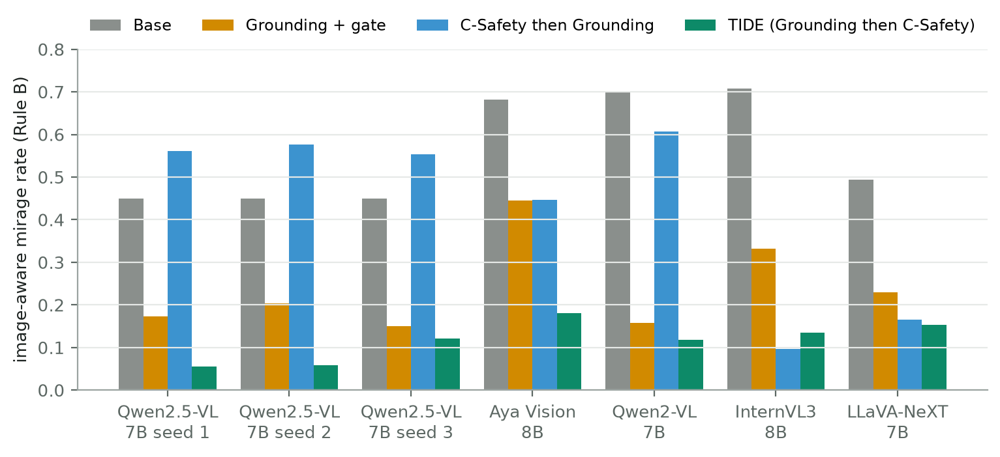
| Model | Base | Grounding + gate | C-Safety → Grounding | TIDE |
|---|
Each hypothesis was written down with its expected direction before its result was seen (claim registry, docs/mission-control/data/registry/claims.json). The verdict compares the measured effect and its 95% interval with that expectation. Hypotheses 13, 14, 16 and 17 were re-scored with results that arrived after the last registry snapshot. Research-extension rows follow their frozen specs; "descriptive" means the spec made no directional prediction.
| Ref. | Prediction | Verdict | What we measured |
|---|
What went against expectations.
All ablations use Qwen2.5-VL-7B. Training ablations use seed 2 on the 500-group EVAL tier (2,000 rows), judged with the response-only judge U plus real-image accuracy; the external benchmarks use the seed-0 cells. TEST was never used for an ablation. Each subsection names the hypothesis it tests (Section 2).
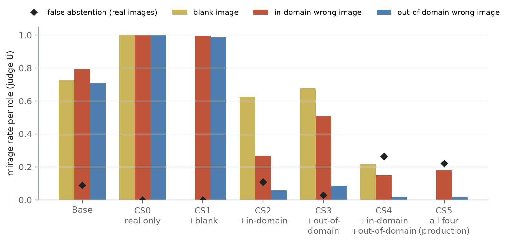
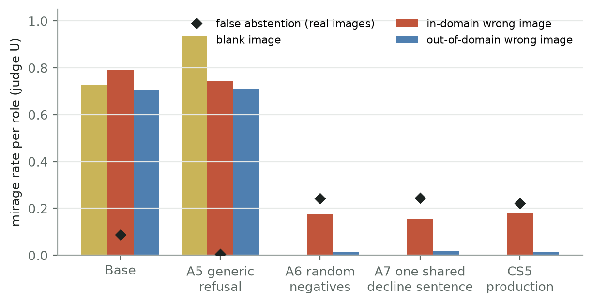
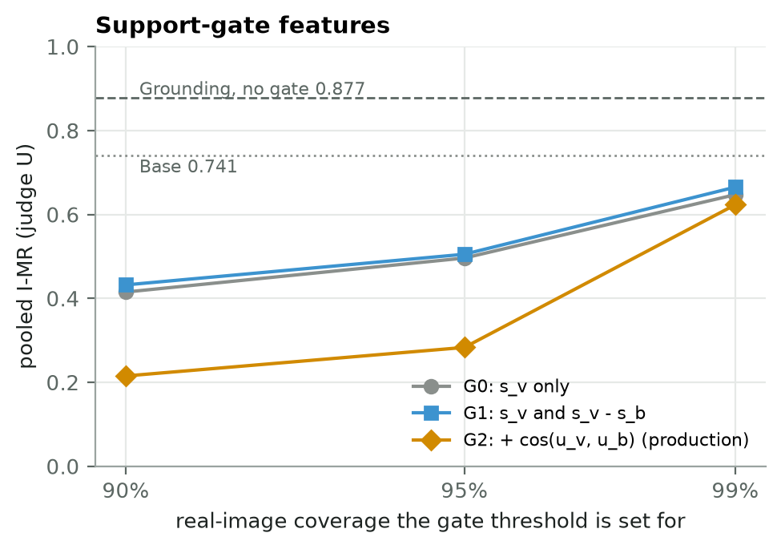
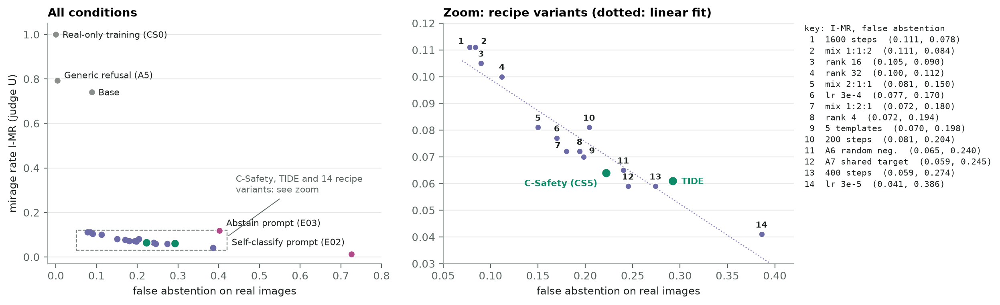
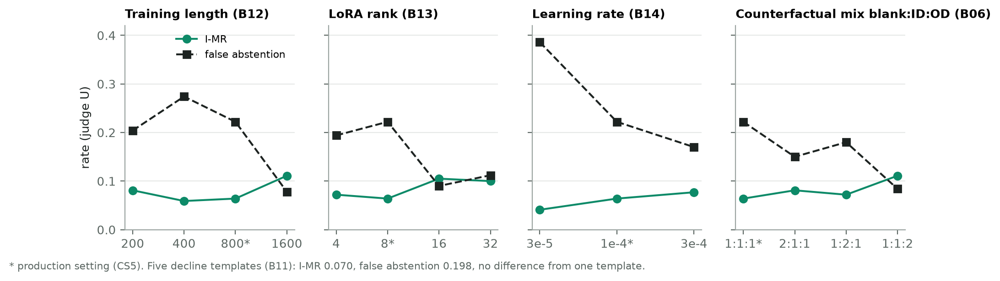
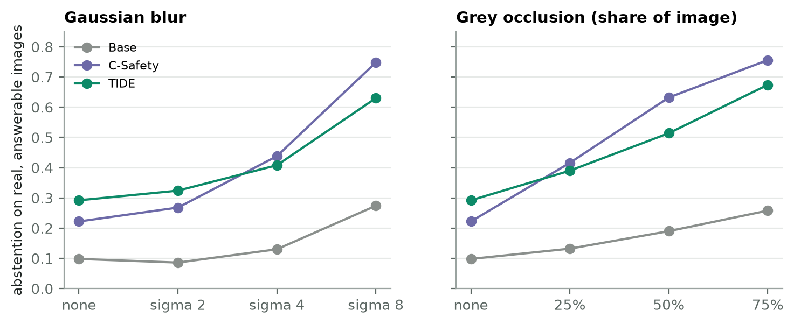
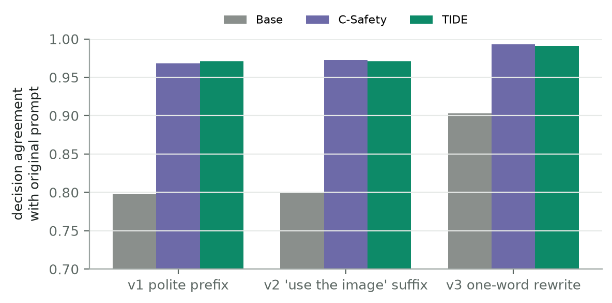
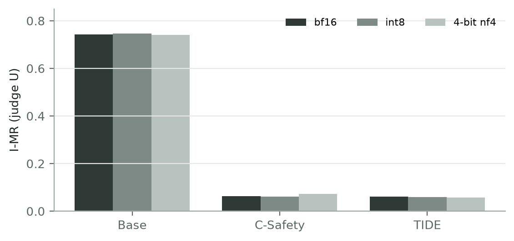
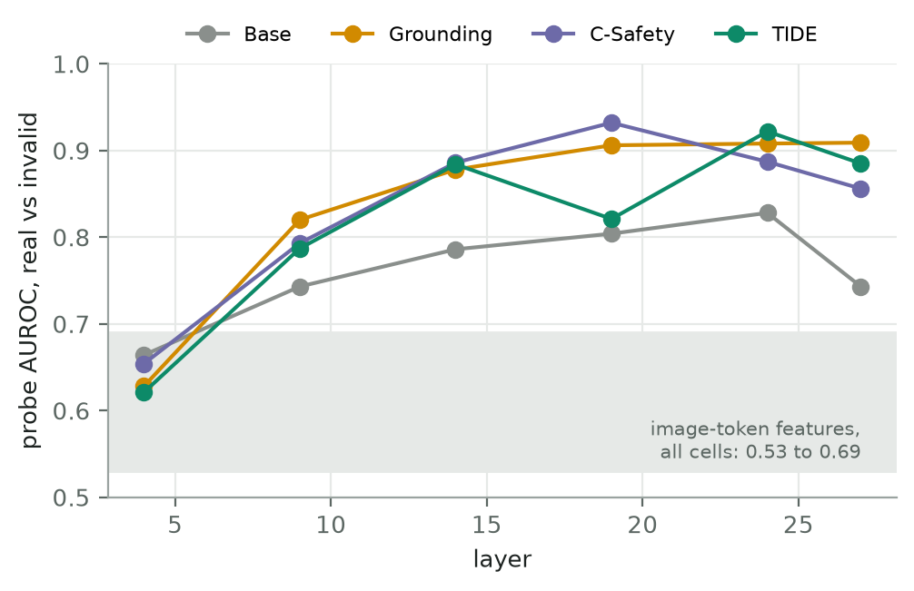
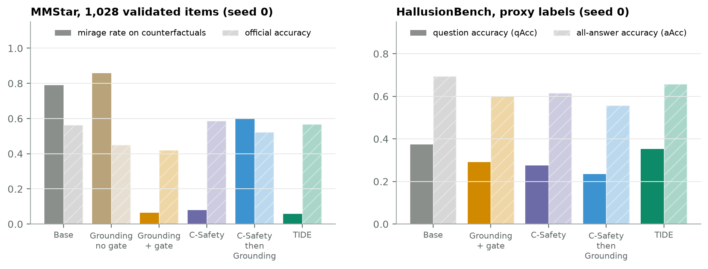
| Check | Result | Reading |
|---|---|---|
| Visual swap (roadmap B16) | base changes answer in 87% of swaps | The base model answers about whatever image it is given and declines in only 1% of swaps. |
| In-domain hardness (roadmap C06) | trend, domain-confounded | Residual in-domain mirage rises with visual similarity of the wrong image, but domains differ in similarity, so this is not a clean effect. |
| Gate calibration (roadmap G05) | ECE 0.07, AUROC 0.92 | The gate score is calibrated; it rejects all blanks but accepts 54 to 60% of in-domain wrong images. |
| LoRA update structure (roadmap H07, H10, H11) | effective rank about 2.6 of 8 | Every C-Safety adapter makes a similar, low-rank change concentrated in layers 20 to 24. |
The master roadmap (cvpr_master_roadmap.json) lists 112 experiments in 11 groups. Status is taken from the live task states of the experiment orchestrator on 30 October. Open a group to see each experiment, the question it answers, and its result or the reason it is waiting. Click a status to filter.
| Day | Work | Where | Depends on |
|---|---|---|---|
| Fri 31 Oct | I03, prompt-pressure stress test. Fill the 22 missing EVAL captions, pass two smoke tests, then generate 12 runs: four seed-0 cells (Base, Grounding, C-Safety → Grounding, TIDE) under three prompts (P0 canonical, P1 direct-answer pressure, P2 MIRAGE evaluation instruction). | Kailash (H100s) | Slurm queue; jobs submitted 30 Oct |
| Fri 31 Oct | F04, image-input judge vs caption judge. Write and freeze the spec and judge script; dry run on 20 rows with no paid calls. | lab PC | none |
| Sat 1 Nov | I03 judging. Import, then Rule B judging of the 12 runs in sequence (about $220 to $250, each run reconciled before the next), then the stress table: change in image-aware mirage rate under P1 and P2 for each cell (tests Hyp. 14 on v5). | lab PC | I03 generation |
| Sun 2 Nov | F04 paid run and analysis. Re-judge the 3,000 invalid EVAL rows of Base and TIDE (canonical prompt, from I03) with gpt-5.5 seeing the image; report agreement with the caption judge (about $130, only if it fits under the cap after I03). | lab PC | I03 P0 runs; budget |
| Sun 2 Nov | Update this page with the I03 and F04 results and re-score Hyp. 14. | lab PC | both |
| if approved | Seed replication of C-Safety and three trade-off points with seeds 0 and 1 (about 10 runs). | Kailash | your approval |
Not in these three days: Llama-3.2-11B (its v6 lock recertification runs in a separate workstream), and image-aware judging of Pixtral-12B and Gemma-3-12B, which needs about $300 beyond the current cap (see Decisions).
| Item | Question | Options |
|---|---|---|
| False-abstention cost | How to present the safety trade-off in the paper | Report the curve as is, or add a lower-abstention operating point. Picking a point needs a fresh split, because EVAL results are descriptive only. |
| C01, leave-one-domain-out | The held-out domain still leaks through out-of-domain counterfactual images (121 to 477 groups per domain) | Drop those examples, or redraw their images from other domains. Either option changes the training construction. |
| Seed replication (roadmap D03, three-seed component ablation) | Approve about 10 Kailash runs and about $6 of judging? | Yes / no |
| Image-aware judging of Pixtral-12B and Gemma-3-12B (roadmap A01, F03) | About $150 per model with Rule B; the $400 cap is committed to I03 and F04 | Raise the cap by about $300, or report these two with judge U only |
| Roadmap H05 (RAPT five-condition probe) and F01 (large held-out human audit) | The RAPT protocol has to be ported from the TC-LIA paper; the judge audit needs labels from two human annotators | Assign owner, or defer to future work |
Terms. Mirage: a substantive answer to a question whose image is blank or unrelated. I-MR: mirages over invalid-evidence rows. False abstention: declining on a real, answerable image. TIDE: the final method, Grounding then C-Safety. Research-extension results are kept separate from main-paper claims; seed 2 only unless stated.